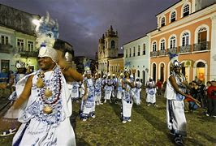

Salvador
O Carnaval de Salvador é um dos mais famosos e tradicionais do Brasil, conhecido por sua energia vibrante, ritmos contagiantes e participação massiva das pessoas nas ruas. Diferente de outros carnavais, onde os desfiles de escolas de samba dominam a cena, o Carnaval de Salvador é marcado pelos blocos de rua, trios elétricos e uma forte presença de ritmos como o axé, samba-reggae e maracatu.
Origens e Influências: O Carnaval de Salvador tem raízes nas festas populares da cidade, que remontam ao período colonial. Durante o século XIX, o Carnaval na Bahia era uma mistura de influências africanas, indígenas e europeias, com festas de rua e manifestações culturais como o batuque, a dança do samba e o carnaval de rua com os primeiros blocos. Bloco Afros e Samba-reggae: Nos anos 1950 e 1960, surgiram os primeiros blocos afros em Salvador, como o Ilê Aiyê e o Olodum, que deram uma nova cara ao Carnaval da cidade, resgatando a cultura afro-brasileira e colocando-a em destaque. Esses blocos trouxeram o samba-reggae, um estilo musical que mesclava o samba com ritmos do Caribe e da África, e que se tornou um dos principais sons do Carnaval soteropolitano. Trios Elétricos: O grande marco moderno do Carnaval de Salvador foi a introdução do trio elétrico, nos anos 1950, com o cantor Dodô e o músico Osmar, que criaram o primeiro trio elétrico para tocar ao vivo durante o Carnaval. Isso permitiu que os artistas se apresentassem em cima de caminhões adaptados, levando a música diretamente para o público nas ruas. Hoje, os trios elétricos são uma das maiores atrações do carnaval, com bandas e artistas de renome, além de blocos de diferentes estilos, fazendo a festa junto com os foliões. Como Funciona o Carnaval de Salvador: Blocos e Camarotes: O Carnaval de Salvador é composto por diferentes tipos de blocos: Blocos de Rua: São grupos de foliões que se organizam para brincar o Carnaval nas ruas, geralmente ao lado dos trios elétricos. Cada bloco tem seu próprio tema e costuma cobrar uma taxa para os participantes, oferecendo abadás (camisetas) e acesso ao circuito do bloco. Camarotes: São espaços privados elevados ao longo dos circuitos do Carnaval, onde os foliões podem assistir aos desfiles com maior conforto e privacidade, geralmente oferecendo serviços exclusivos como bebidas, comidas e shows. Circuitos: O Carnaval de Salvador é dividido em vários circuitos espalhados pela cidade: Circuito Dodô (Barra-Ondina): É o circuito mais famoso, localizado ao longo da orla de Salvador, com vista para o mar e uma grande concentração de blocos e trios elétricos. Circuito Osmar (Campo Grande): Famoso por sua animação, onde acontecem muitos desfiles de blocos tradicionais e de grupos como o Ilê Aiyê e Olodum. Circuito Batatinha: É um circuito menor, mas com grande envolvimento popular, onde grupos de samba e blocos mais alternativos se apresentam. Música: A música é a alma do Carnaval de Salvador. Axé, samba-reggae, frevo, maracatu, e forró são alguns dos principais ritmos que animam o público. Grandes nomes da música brasileira como Ivete Sangalo, Chiclete com Banana, Luan Santana, Cláudia Leitte e Carlinhos Brown têm presença constante durante a festa, atraindo multidões.Participação Popular: Uma das marcas do Carnaval de Salvador é a participação popular. Ao contrário de outros carnavais, onde os desfiles são acompanhados de longe, em Salvador os foliões estão literalmente no meio da festa, dançando ao lado dos trios elétricos, se misturando com os artistas e com a multidão. Não importa se você está no camarote ou na rua, todos fazem parte da celebração. Características Únicas: Festa de rua: Diferente de outros carnavais no Brasil, como o do Rio de Janeiro, onde os desfiles acontecem em sambódromos, em Salvador as ruas são os maiores palcos da festa. Acessibilidade: O Carnaval de Salvador é muito acessível para as pessoas. Ao longo dos circuitos, quem não tem abadá pode acompanhar os trios de forma gratuita. Diversidade cultural: O evento reflete a rica diversidade cultural da Bahia, unindo músicas, danças, religiões e costumes de várias origens, com forte presença da cultura afro-brasileira. Conclusão: O Carnaval de Salvador é uma experiência única que mistura história, cultura, música e muita energia. É uma festa democrática e popular, onde todos, independentemente de sua classe social, podem se divertir e vivenciar a alegria típica da Bahia. É o maior evento de rua do Brasil e atrai turistas de todo o mundo, interessados em vivenciar a festa mais animada e colorida do planeta. 